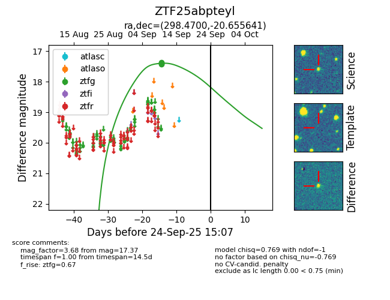
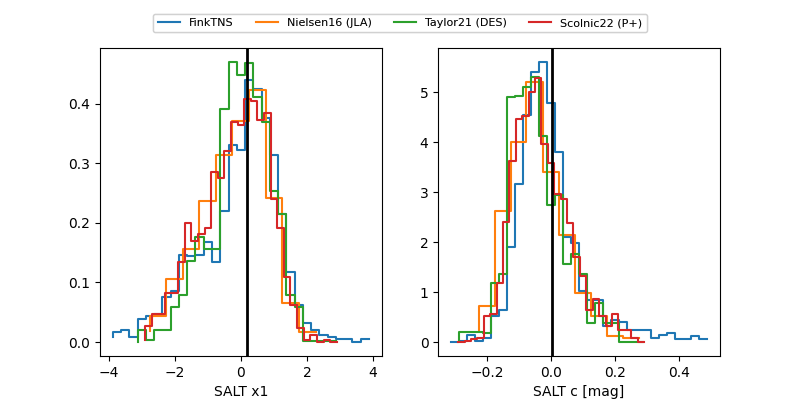

FINK: ZTF25abpteyl
Lasair: ZTF25abpteyl
ALeRCE: ZTF25abpteyl
ZTF25abpteyl (ztf,fink)
equatorial (ra, dec) = (298.4700,-20.65564)
galactic (l, b) = (20.4721,-22.64036)


last ztfg=17.37
4 ztfg detections